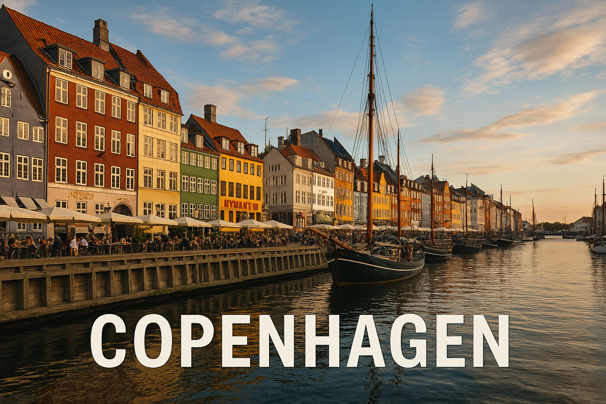

Copenhague est la capitale du Danemark. Elle est célèbre pour son port coloré de Nyhavn, ses vélos, et sa petite sirène de bronze au bord de l’eau.
La Petite Sirène de Copenhague est inspirée d’un conte d’Andersen, un écrivain danois très célèbre ! 🧜‍♀️
Quel personnage célèbre a une statue à Copenhague ?